Synthetic Dislocation
Discontinuities already built the plain-photo version of this jump. Here we have added a speckle pattern, so the correlation has something to track:
import dictk
from dictk.image import combine, crack_dislocation, write
speckle = dictk.rosta(width=300, height=300, density=0.5)
photo = dictk.astronaut(width=300, height=300)
reference_image = combine(a=speckle, b=photo)
current_image = crack_dislocation(arr=reference_image, offset=4.0)
write(arr=reference_image, path="synthetic_dislocation_reference.png")
write(arr=current_image, path="synthetic_dislocation_current.png")
Saved: synthetic_dislocation_reference.png, synthetic_dislocation_current.png
| Synthetic Dislocation | Image |
|---|---|
| Original synthetic_dislocation_reference.png |  |
| offset=4 pixels synthetic_dislocation_current.png | 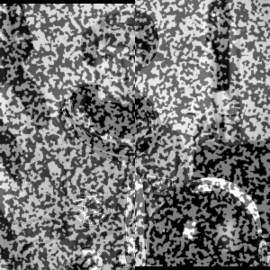 |
{kind=link}
Both carry the same rosta speckle pattern — only the dislocation
differs. Discontinuities's plain-photo version
showed the geometry alone; this pair is what a correlation actually
sees.
A Window Straddling the Crack
Place a kernel window centered exactly on the crack: x = 150, the
image's own vertical midline, where the dislocation splits left from
right. A window there doesn't sit cleanly on one side. It contains both
true displacements at once: +4 pixels on its left half, -4 pixels on its
right. 0 pixels for all pixels in the current image.
Recall that
dictk's own y-axis points down the page, not up (see Multi-Point Motion for this same sign convention). So +4 here means the left half shifts down. -4 means the right half shifts up.
from dictk.plot import subimage_comparison_plot
kernel_margin = 25
kernel_origin = PixelCoordinate(x=p0.x - kernel_margin, y=p0.y - kernel_margin)
subimage_comparison_plot(
image=reference_image,
origin=kernel_origin,
width=2 * kernel_margin,
height=2 * kernel_margin,
point=p0,
point_color="orange",
point_label="$P$",
subimage_label="kernel",
color="green",
origin_label="$K$",
source_origin_label="$O$",
figsize=(6.4, 4.8),
path="synthetic_dislocation_kernel.png",
)
Saved: synthetic_dislocation_kernel.png
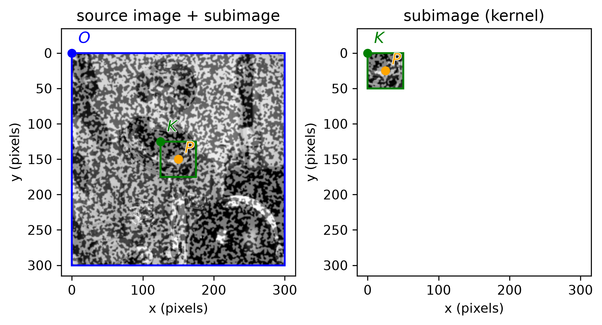
reference_image centered on the crack at , with origin pixels (green dot). Because the window straddles the crack instead of sitting on one side of it, it contains pixels from both displacements on the left and right halves of the current image. This follows the nomenclature and convention established in Cross Correlation (CC).from dictk.image import subimage, PixelCoordinate
from dictk.correlation import zncc
from dictk.plot import spatial_correlation_quadrant_plot, phase_correlation_quadrant_plot
p0 = PixelCoordinate(x=150, y=150)
kernel_margin, search_margin = 25, 45
kernel = subimage(
image=reference_image,
origin=PixelCoordinate(x=p0.x - kernel_margin, y=p0.y - kernel_margin),
width=2 * kernel_margin, height=2 * kernel_margin,
)
search = subimage(
image=current_image,
origin=PixelCoordinate(x=p0.x - search_margin, y=p0.y - search_margin),
width=2 * search_margin, height=2 * search_margin,
)
spatial_correlation_quadrant_plot(
kernel=kernel, search=search,
correlation_surface=zncc(kernel=kernel, search=search),
title="Zero-mean Normalized Cross-Correlation (ZNCC)",
path="synthetic_dislocation_zncc.png",
)
phase_correlation_quadrant_plot(
kernel=kernel, search=search,
title="Phase Correlation (FFT)",
path="synthetic_dislocation_phase.png",
)
Saved: synthetic_dislocation_reference.png, synthetic_dislocation_current.png, synthetic_dislocation_zncc.png, synthetic_dislocation_phase.png
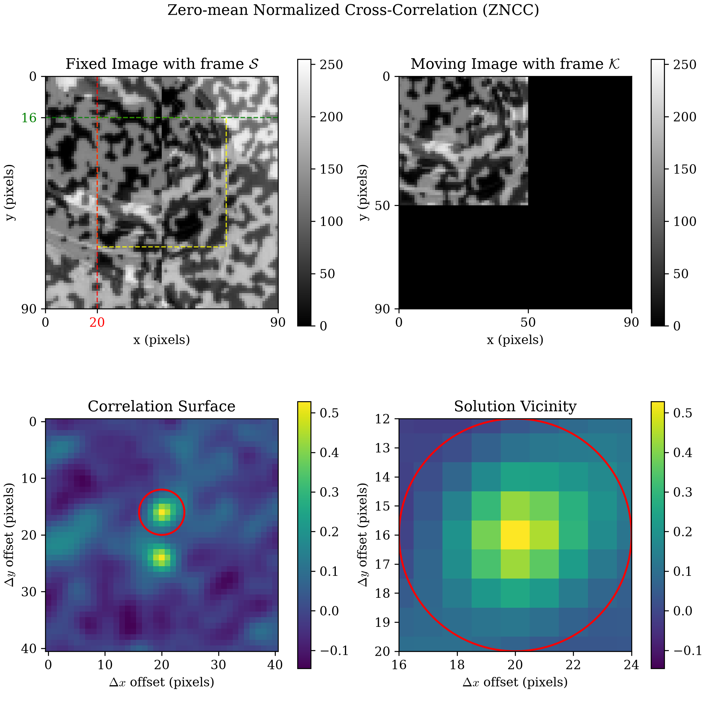
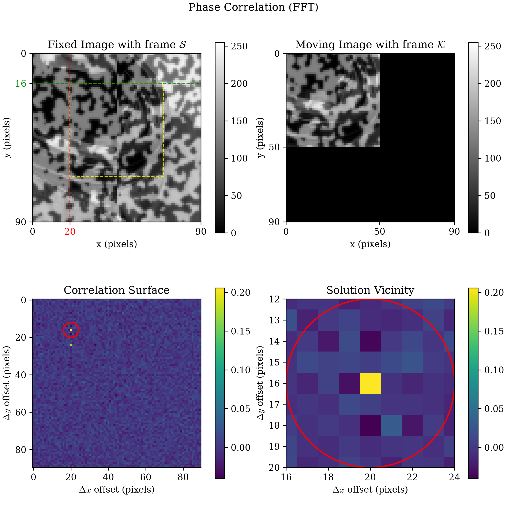
Two comparably-tall peaks appear, not one, because a single-peak
correlation answer can't represent two different true displacements at
once. Neither is a false match. Each is exactly right for its own half
of the window. The peaks sit at y=16 and y=24, straddling the
window's own zero-shift center (y=20) by exactly ∓4 pixels. That's the
same 4-pixel offset crack_dislocation applied. Their separation, 8
pixels, is exactly twice it. ZNCC (spatial) and phase correlation (FFT)
agree: both land on the same two peaks.
Does This Hold in General?
One offset proving the point isn't enough to trust it. Sweeping
crack_dislocation's offset from 1 to 32 pixels, and checking whether
each surface's two-peak separation still equals twice the offset:
| offset (px) | 2 x offset | ZNCC separation | ZNCC matches | Phase separation | Phase matches |
|---|---|---|---|---|---|
| 1 | 2 | n/a | False | 2 | True |
| 2 | 4 | 4 | True | 4 | True |
| 3 | 6 | 6 | True | 6 | True |
| 4 | 8 | 8 | True | 8 | True |
| 6 | 12 | 12 | True | 12 | True |
| 8 | 16 | 16 | True | 16 | True |
| 12 | 24 | 24 | True | 24 | True |
| 16 | 32 | 32 | True | 32 | True |
| 20 | 40 | 40 | True | 40 | True |
| 24 | 48 | 48 | True | 48 | True |
| 28 | 56 | 56 | True | 56 | True |
| 32 | 64 | 64 | True | 64 | True |
Saved: synthetic_dislocation_sweep.png
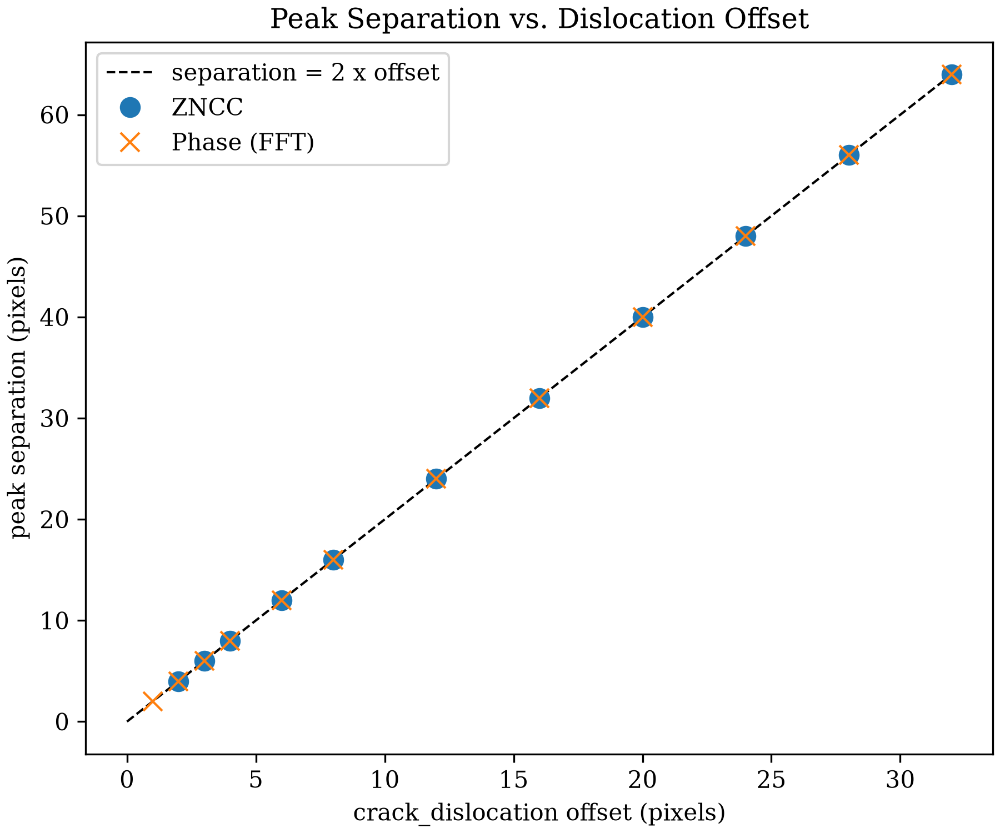
The encoding holds reliably across a 32x range of offsets, for both criteria. One exception sits at the low end: once the two true displacements are only a pixel apart, resolving them as two distinct peaks runs into the same integer-pixel resolution limit Subpixel Accuracy already covers for a single peak.
Moving the Window Off the Crack
Every result so far centers the window exactly on the crack, at
x = 150. What happens as that center slides away from it?
kernel_margin=25 sets a hard geometric boundary. Once the window's
center sits more than 25 pixels from the crack, the window no longer
touches both halves at all: it's x <= 125 for a window entirely in
the left half, x >= 175 for one entirely in the right. Sweeping
x from 100 to 200 and reading the ZNCC surface at both candidate
peak locations, Δy=+4 (the left half's own shift) and Δy=-4 (the
right half's own shift), at each step:
| kernel center x | left-half peak (dy=+4) | right-half peak (dy=-4) |
|---|---|---|
| 100 | 1.000 | 0.048 |
| 110 | 1.000 | 0.122 |
| 120 | 1.000 | 0.065 |
| 130 | 0.901 | 0.164 |
| 140 | 0.725 | 0.360 |
| 150 | 0.519 | 0.528 |
| 160 | 0.433 | 0.722 |
| 170 | 0.311 | 0.939 |
| 180 | 0.304 | 1.000 |
| 190 | 0.221 | 1.000 |
| 200 | 0.233 | 1.000 |
Saved: synthetic_dislocation_x_sweep.png
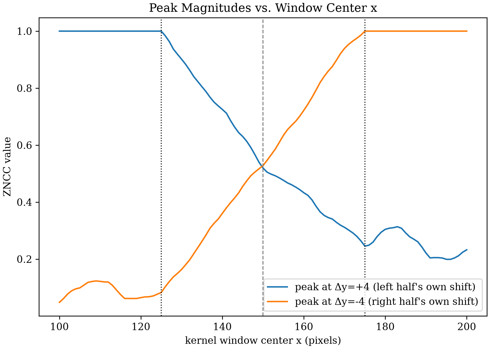
The line plot only reads two fixed points on the surface. The surface
itself tells the same story directly: the Correlation Surface panel at
five kernel window center positions, x = 130, 140, 150, 160, 170,
sharing one colorbar:
Saved: synthetic_dislocation_x_sweep_panels.png
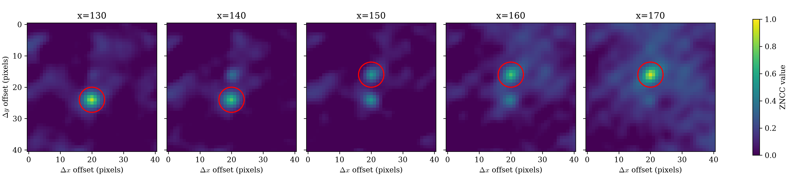
ZNCC hits exactly 1.0, not just a high value, wherever the window sits fully inside one half. That's not a coincidence: a window entirely inside one half sees a pure integer-pixel rigid shift of identical content. There's no interpolation error and nothing else to explain away, so ZNCC reaches its exact theoretical maximum.
The two sides aren't quite mirror images once the window fully clears the crack. Below x=125 the vanishing peak (Δy=-4) fades to 0.05-0.16. Above x=175 the vanishing peak (Δy=+4) settles into a higher, fluctuating 0.2-0.3 band instead, with a small bump near x=183. That difference comes from the underlying speckle and photo content on each side, not from the crack itself.
Straddling the crack is what makes two comparable peaks possible. Move the window fully clear of it, in either direction, and only one peak remains: a single, perfect match.
Displacement Field
Every result so far reads one fixed point, or one line through the
image (y = 150, sweeping x). A grid of tracked points turns that
into a field: the same displacement each single measurement already
found, but everywhere at once, not just where a human chose to look.
SEARCH_MARGIN = 45 sets how far each point's own search window
reaches from its own center. Starting the grid's own origin exactly
there keeps every point's search window fully inside the image, with no
edge effect competing with the crack for attention:
from dictk.grid import generate, locate_subpixel
points = generate(
origin=PixelCoordinate(x=SEARCH_MARGIN, y=SEARCH_MARGIN),
count_x=43,
count_y=43,
spacing_x=5,
spacing_y=5,
)
found = locate_subpixel(
reference_image=reference_image,
current_image=current_image,
reference_points=points,
kernel_margin_width=KERNEL_MARGIN,
kernel_margin_height=KERNEL_MARGIN,
search_margin_width=SEARCH_MARGIN,
search_margin_height=SEARCH_MARGIN,
upsample_factor=100,
)
dx = [f.x - p.x for f, p in zip(found, points)]
dy = [f.y - p.y for f, p in zip(found, points)]
The dy field, painted over current_image:
from dictk.plot import point_displacement_plot
point_displacement_plot(
points=found,
values=dy,
label=r"Displacement, $\delta y$ (pixels)",
image=current_image,
dot_size=6,
marker="s",
cmap="coolwarm",
path="synthetic_dislocation_displacement_field.png",
)
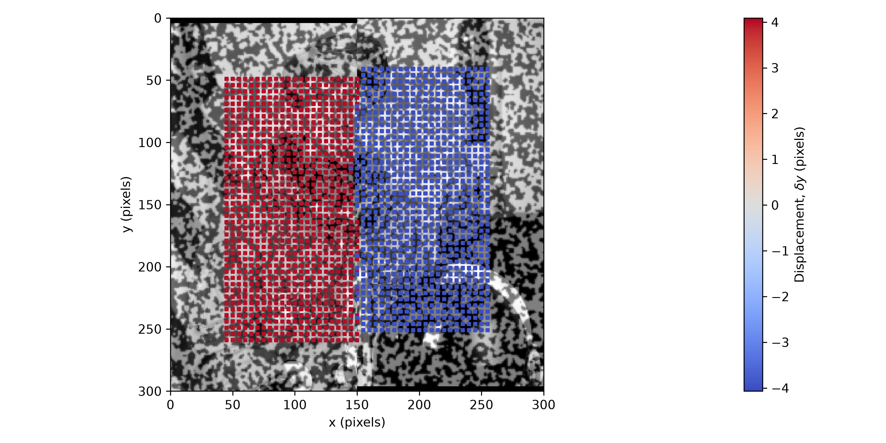
dy field over all 1849 tracked points. Not a gradient: two flat colors, solid (left) and solid (right), meeting at a boundary within one grid column (5 pixels) of the crack at , for every row.Zooming into that boundary shows small gaps: spots where the gray and black speckle image shows through, neither red nor blue. None of the 1849 points are missing -- every one of the 43 columns holds all 43 rows, and every point gets a color. The gaps come from how the points are drawn, not which ones are plotted.
dot_size=6 sizes each square marker at only about a quarter of its
own 5-pixel grid cell. Every marker sits well short of its neighbors,
on every side, everywhere in the field -- the same small gap separates
every red neighbor, every blue neighbor, and every point at the
boundary. That gap is easy to miss where it sits between two markers of
the same color: a patch of speckle between two red squares blends into
the surrounding red, and the eye skips past it, reading as texture
rather than as a hole. The identical-sized gap between a red marker and
a blue one is unmistakable, flanked by two different colors instead of
one. The gaps aren't concentrated at the crack. They're everywhere.
Only at the crack does the color change on either side make them
visible.
crack_dislocation only ever moves pixels vertically, so dx should
come back trivially close to zero at every one of these 1849 points --
worth checking directly, not just assuming it from the one point
already measured:
| quantity | value |
|---|---|
| points in group | 1849 |
| mean dx (px) | -0.0008 |
| max abs dx (px) | 0.0700 |
| quantity | value |
|---|---|
| points in group | 921 |
| mean dy (px) | 4.0038 |
| std dy (px) | 0.0173 |
| min dy (px) | 3.9500 |
| max dy (px) | 4.0900 |
| quantity | value |
|---|---|
| points in group | 928 |
| mean dy (px) | -4.0033 |
| std dy (px) | 0.0156 |
| min dy (px) | -4.0700 |
| max dy (px) | -3.9300 |
Saved: synthetic_dislocation_displacement_field.png, synthetic_dislocation_displacement_field_dx_histogram.png, synthetic_dislocation_displacement_field_dy_positive_histogram.png, synthetic_dislocation_displacement_field_dy_negative_histogram.png
Displacement dx
dx does stay trivially small: every one of the 1849 points comes back
within 0.07 pixels of zero, well under a tenth of a pixel, as the first
table above shows. The full distribution, not just its extremes:
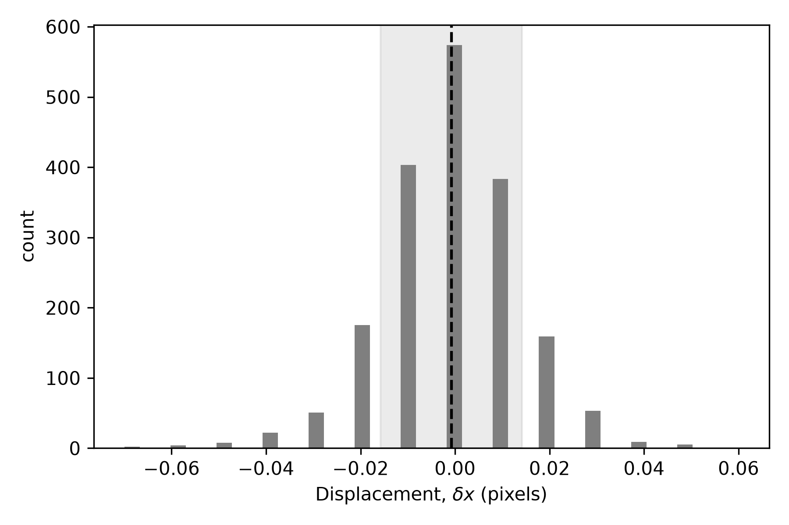
dx distribution across all 1849 tracked points: a single peak centered on zero, no second mode. The shaded band marks one std on either side of the mean; the dashed line marks the mean itself. The 0.01-pixel steps are upsample_factor=100's own subpixel quantization, the same effect High Point Density found for dy.Displacement dy
That boundary in the field figure above is sharper than "Moving the
Window Off the Crack" would suggest. Windows straddle the crack for
every point with 125 < x < 175 -- 387 of the 1849 points here -- yet
none of them return a value between the two true displacements. Each
straddling window's correlation surface does hold two comparable peaks,
exactly as the earlier single-window measurement found, but
locate_subpixel still returns one location: whichever peak is taller.
Which one wins depends on how much of that window's own area sits on
each side of the crack, and that tips over almost exactly at the crack
itself, not gradually across the full 50-pixel span a straddling window
could in principle blur together.
Splitting dy on its own sign, rather than by x position, gives the
same two groups directly: 921 points read a positive displacement, 928
read a negative one, and none read zero. The second and third tables
above cover each group on its own.
The +4 group:
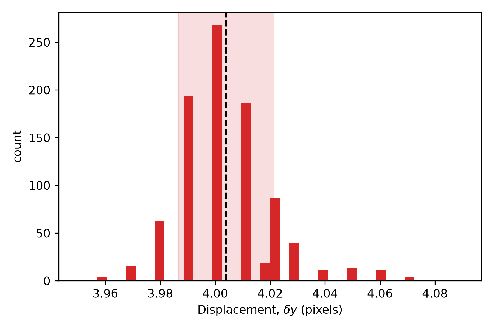
dy distribution for the 921 points in the +4 group: a single peak at 4.00 pixels, std 0.017 pixels -- the shaded band and dashed line mark that mean and its one-std spread directly.The -4 group:
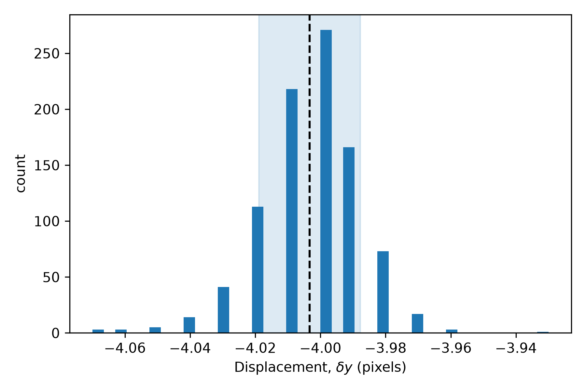
dy distribution for the 928 points in the -4 group: a single peak at -4.00 pixels, std 0.016 pixels -- the shaded band and dashed line mark that mean and its one-std spread directly.Both groups are tight, single-mode distributions, each barely 0.15 pixels wide start to finish. The largest deviation from a clean , anywhere in either group including the 387 straddling points, is 0.09 pixels.
VIC-2D-Style Point Density
High Point Density verifies a denser grid --
count_x=53, count_y=54, spacing_x=spacing_y=5, with
kernel_margin_width=kernel_margin_height=13,
search_margin_width=search_margin_height=25 -- against a real VIC-2D
run. That comparison is for a different experiment, though: a 2%
uniaxial stretch, not a crack. VIC-2D has never analyzed this page's
own crack-dislocation image pair, so nothing below is a VIC-2D result --
just the same grid density and kernel size, in VIC-2D's own style,
applied to this page's own crack instead. Does that same grid change
anything about the field above?
CURRENT_KERNEL_MARGIN = 25
CURRENT_SEARCH_MARGIN = 45
points_current = generate(
origin=PixelCoordinate(x=CURRENT_SEARCH_MARGIN, y=CURRENT_SEARCH_MARGIN),
count_x=43,
count_y=43,
spacing_x=5,
spacing_y=5,
)
VIC2D_STYLE_KERNEL_MARGIN = 13
VIC2D_STYLE_SEARCH_MARGIN = 25
points_vic2d = generate(
origin=PixelCoordinate(x=18, y=16),
count_x=53,
count_y=54,
spacing_x=5,
spacing_y=5,
)
Saved: synthetic_dislocation_grid_kernel_panels.png
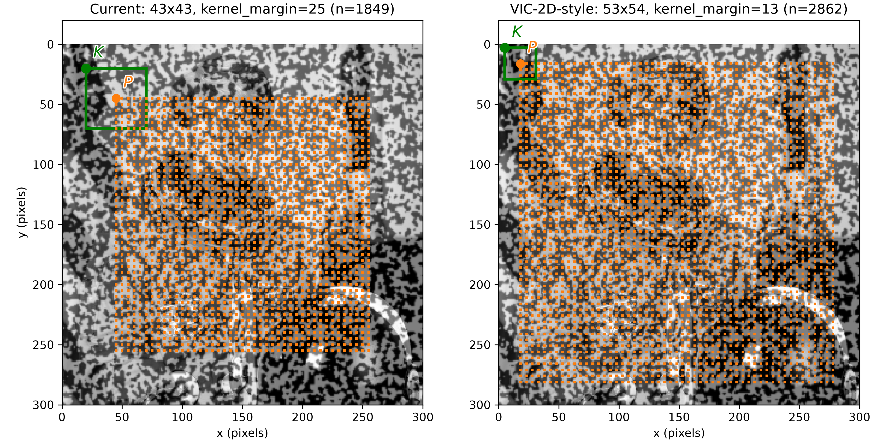
reference_image. Left: the current 43x43 grid (1849 points, 5-pixel spacing), with a green box around points_current[0] showing its 50x50 pixel kernel window (kernel_margin=25). Right: the denser VIC-2D-style 53x54 grid (2862 points, same 5-pixel spacing), with a green box around points_vic2d[0] showing its smaller 26x26 pixel kernel window (kernel_margin=13). In both, the box's origin is marked (green dot) and its tracked point (orange dot), matching A Window Straddling the Crack's own labeling convention.| grid | points | kernel (px) | clipped | max dev (px) | mean dev (px) |
|---|---|---|---|---|---|
| Current (43x43, kernel_margin=25) | 1849 | 50x50 | 0 | 0.0900 | 0.0119 |
| VIC-2D style (53x54, kernel_margin=13) | 2862 | 26x26 | 362 | 0.1900 | 0.0267 |
| grid | kernel (px) | clipped | max dev (px) | mean dev (px) |
|---|---|---|---|---|
| Current (43x43, kernel_margin=25) | 50x50 | 0 | 0.0900 | 0.0119 |
| Current density, VIC-2D kernel (43x43, kernel_margin=13) | 26x26 | 0 | 0.1600 | 0.0257 |
| VIC-2D style (53x54, kernel_margin=13) | 26x26 | 362 | 0.1900 | 0.0267 |
The first table above tracks the two grids as they'd actually run: the VIC-2D-style grid finds more points, 2862 against 1849, but its own smaller kernel window (26x26 pixels, against the current grid's 50x50) roughly doubles the largest deviation from a clean : 0.19 pixels, against 0.09. 362 of its 2862 points also sit close enough to the image edge that their own search windows reach outside it.
Is that the point spacing? Both grids use the same 5-pixel spacing, so no. The second table isolates the kernel size alone: it tracks the current grid's own 1849-point layout, at the same edge-safe origin, but with the VIC-2D grid's smaller kernel instead.
Isolating the kernel size alone already produces most of the difference. It measures 0.16 pixels, against 0.19 for the full VIC-2D grid and 0.09 for the current grid. The kernel window's side length drives this difference, not point spacing and not the image edge.
A 26x26 pixel window captures a quarter of the speckle content a 50x50 pixel window captures. With less speckle content, cross-correlation finds fewer unique features to match. It locks the subpixel position less precisely. That weaker lock raises deviation at every point, even a point whose own window never touches the crack. Edge clipping adds further deviation on top: 0.16 pixels without it, 0.19 pixels with it.
What This Doesn't Do
This is a diagnostic. It doesn't fix anything. Nothing here located the crack; a human already centered the window on it. Discontinuities names the open problem this points toward: an algorithm that finds this signature on its own, rather than a person choosing where to look.
Continue to Experimental Dislocation to check whether the same signature survives on a real crack, where the ground truth isn't known in advance.
synthetic_dislocation_kernel.py
"""Show the kernel window (green box) straddling the crack in
`reference_image`, centered on the crack's own x = 150.
"""
import dictk
from dictk.image import combine, PixelCoordinate
from dictk.plot import subimage_comparison_plot
WIDTH = HEIGHT = 300
KERNEL_MARGIN = 25
speckle = dictk.rosta(width=WIDTH, height=HEIGHT, density=0.5)
photo = dictk.astronaut(width=WIDTH, height=HEIGHT)
reference_image = combine(a=speckle, b=photo)
p0 = PixelCoordinate(x=WIDTH // 2, y=HEIGHT // 2)
kernel_origin = PixelCoordinate(x=p0.x - KERNEL_MARGIN, y=p0.y - KERNEL_MARGIN)
subimage_comparison_plot(
image=reference_image,
origin=kernel_origin,
width=2 * KERNEL_MARGIN,
height=2 * KERNEL_MARGIN,
point=p0,
point_color="orange",
point_label="$P$",
subimage_label="kernel",
color="green",
origin_label="$K$",
source_origin_label="$O$",
figsize=(6.4, 4.8),
path="synthetic_dislocation_kernel.png",
)
print("Saved: synthetic_dislocation_kernel.png")
synthetic_dislocation_quadrant.py
"""Build a synthetic crack-dislocation image pair and plot the correlation
surface a window straddling the crack produces, ZNCC and FFT side by side.
"""
import dictk
from dictk.image import combine, crack_dislocation, subimage, write, PixelCoordinate
from dictk.correlation import zncc
from dictk.plot import (
spatial_correlation_quadrant_plot,
phase_correlation_quadrant_plot,
)
WIDTH = HEIGHT = 300
OFFSET = 4.0
KERNEL_MARGIN = 25
SEARCH_MARGIN = 45
speckle = dictk.rosta(width=WIDTH, height=HEIGHT, density=0.5)
photo = dictk.astronaut(width=WIDTH, height=HEIGHT)
reference_image = combine(a=speckle, b=photo)
current_image = crack_dislocation(arr=reference_image, offset=OFFSET)
write(arr=reference_image, path="synthetic_dislocation_reference.png")
write(arr=current_image, path="synthetic_dislocation_current.png")
p0 = PixelCoordinate(x=WIDTH // 2, y=HEIGHT // 2)
kernel = subimage(
image=reference_image,
origin=PixelCoordinate(x=p0.x - KERNEL_MARGIN, y=p0.y - KERNEL_MARGIN),
width=2 * KERNEL_MARGIN,
height=2 * KERNEL_MARGIN,
)
search = subimage(
image=current_image,
origin=PixelCoordinate(x=p0.x - SEARCH_MARGIN, y=p0.y - SEARCH_MARGIN),
width=2 * SEARCH_MARGIN,
height=2 * SEARCH_MARGIN,
)
spatial_correlation_quadrant_plot(
kernel=kernel,
search=search,
correlation_surface=zncc(kernel=kernel, search=search),
title="Zero-mean Normalized Cross-Correlation (ZNCC)",
path="synthetic_dislocation_zncc.png",
)
phase_correlation_quadrant_plot(
kernel=kernel,
search=search,
title="Phase Correlation (FFT)",
path="synthetic_dislocation_phase.png",
)
print(
"Saved: synthetic_dislocation_reference.png, "
"synthetic_dislocation_current.png, "
"synthetic_dislocation_zncc.png, "
"synthetic_dislocation_phase.png"
)
synthetic_dislocation_sweep.py
"""Sweep the crack_dislocation offset and check whether the correlation
surface's two-peak separation reliably encodes 2x that offset, for both
ZNCC (spatial) and phase correlation (FFT).
"""
import numpy as np
import matplotlib.pyplot as plt
from scipy.signal import find_peaks
import dictk
from dictk.image import combine, crack_dislocation, subimage, PixelCoordinate
from dictk.correlation import zncc, phase_correlation
plt.rcParams.update({"font.family": "serif", "mathtext.fontset": "cm"})
WIDTH = HEIGHT = 300
KERNEL_MARGIN = 25
OFFSETS = [1, 2, 3, 4, 6, 8, 12, 16, 20, 24, 28, 32]
speckle = dictk.rosta(width=WIDTH, height=HEIGHT, density=0.5)
photo = dictk.astronaut(width=WIDTH, height=HEIGHT)
reference_image = combine(a=speckle, b=photo)
p0 = PixelCoordinate(x=WIDTH // 2, y=HEIGHT // 2)
def two_peak_separation(surface: np.ndarray) -> tuple[int, int] | None:
"""Return (separation, count) for the two tallest peaks along the
argmax column, or None if fewer than two are resolvable."""
x_max = int(np.argmax(surface.max(axis=0)))
column = surface[:, x_max]
peaks, props = find_peaks(column, height=0.2 * column.max(), distance=2)
if len(peaks) < 2:
return None
order = np.argsort(props["peak_heights"])[::-1][:2]
y_top_two = sorted(peaks[order])
return int(y_top_two[1] - y_top_two[0])
rows = []
for offset in OFFSETS:
current_image = crack_dislocation(arr=reference_image, offset=float(offset))
search_margin = KERNEL_MARGIN + int(np.ceil(offset)) + 10
kernel = subimage(
image=reference_image,
origin=PixelCoordinate(x=p0.x - KERNEL_MARGIN, y=p0.y - KERNEL_MARGIN),
width=2 * KERNEL_MARGIN,
height=2 * KERNEL_MARGIN,
)
search = subimage(
image=current_image,
origin=PixelCoordinate(x=p0.x - search_margin, y=p0.y - search_margin),
width=2 * search_margin,
height=2 * search_margin,
)
zncc_sep = two_peak_separation(zncc(kernel=kernel, search=search))
phase_sep = two_peak_separation(phase_correlation(kernel=kernel, search=search))
rows.append((offset, zncc_sep, phase_sep))
print(
"| offset (px) | 2 x offset | ZNCC separation | ZNCC matches | Phase separation | Phase matches |"
)
print("|:---:|:---:|:---:|:---:|:---:|:---:|")
for offset, zncc_sep, phase_sep in rows:
expected = 2 * offset
print(
f"| {offset} | {expected} | "
f"{zncc_sep if zncc_sep is not None else 'n/a'} | "
f"{zncc_sep == expected} | "
f"{phase_sep if phase_sep is not None else 'n/a'} | "
f"{phase_sep == expected} |"
)
print()
fig, ax = plt.subplots(figsize=(6.0, 5.0), constrained_layout=True)
offsets_plot = [r[0] for r in rows]
zncc_plot = [r[1] for r in rows]
phase_plot = [r[2] for r in rows]
line_x = np.linspace(0, max(offsets_plot), 100)
ax.plot(
line_x,
2 * line_x,
linestyle="--",
color="black",
linewidth=1,
label="separation = 2 x offset",
)
ax.plot(
offsets_plot,
zncc_plot,
marker="o",
linestyle="none",
color="tab:blue",
label="ZNCC",
markersize=8,
)
ax.plot(
offsets_plot,
phase_plot,
marker="x",
linestyle="none",
color="tab:orange",
label="Phase (FFT)",
markersize=8,
)
ax.set_xlabel("crack_dislocation offset (pixels)")
ax.set_ylabel("peak separation (pixels)")
ax.set_title("Peak Separation vs. Dislocation Offset")
ax.legend()
fig.savefig("synthetic_dislocation_sweep.png", dpi=300)
print("Saved: synthetic_dislocation_sweep.png")
synthetic_dislocation_x_sweep.py
"""Sweep the kernel window's center x position across the crack and
watch the two ZNCC peaks trade dominance: a single peak away from the
crack, both present and comparable near it.
"""
import matplotlib.pyplot as plt
import dictk
from dictk.image import combine, crack_dislocation, subimage, PixelCoordinate
from dictk.correlation import zncc
plt.rcParams.update({"font.family": "serif", "mathtext.fontset": "cm"})
WIDTH = HEIGHT = 300
OFFSET = 4.0
KERNEL_MARGIN = 25
SEARCH_MARGIN = 45
Y = 150
CENTER_INDEX = SEARCH_MARGIN - KERNEL_MARGIN # 20, the zero-shift index
LEFT_ROW = CENTER_INDEX + int(OFFSET) # y=24, dy=+4 (left half's own shift)
RIGHT_ROW = CENTER_INDEX - int(OFFSET) # y=16, dy=-4 (right half's own shift)
speckle = dictk.rosta(width=WIDTH, height=HEIGHT, density=0.5)
photo = dictk.astronaut(width=WIDTH, height=HEIGHT)
reference_image = combine(a=speckle, b=photo)
current_image = crack_dislocation(arr=reference_image, offset=OFFSET)
xs = list(range(100, 201))
left_peak = []
right_peak = []
for x in xs:
p0 = PixelCoordinate(x=x, y=Y)
kernel = subimage(
image=reference_image,
origin=PixelCoordinate(x=p0.x - KERNEL_MARGIN, y=p0.y - KERNEL_MARGIN),
width=2 * KERNEL_MARGIN,
height=2 * KERNEL_MARGIN,
)
search = subimage(
image=current_image,
origin=PixelCoordinate(x=p0.x - SEARCH_MARGIN, y=p0.y - SEARCH_MARGIN),
width=2 * SEARCH_MARGIN,
height=2 * SEARCH_MARGIN,
)
surf = zncc(kernel=kernel, search=search)
left_peak.append(surf[LEFT_ROW, CENTER_INDEX])
right_peak.append(surf[RIGHT_ROW, CENTER_INDEX])
full_left_boundary = (
WIDTH / 2 - KERNEL_MARGIN
) # 125: kernel entirely left of the crack at or below this x
full_right_boundary = (
WIDTH / 2 + KERNEL_MARGIN
) # 175: kernel entirely right of the crack at or above this x
print("| kernel center x | left-half peak (dy=+4) | right-half peak (dy=-4) |")
print("|:---:|:---:|:---:|")
for x in range(100, 201, 10):
i = xs.index(x)
print(f"| {x} | {left_peak[i]:.3f} | {right_peak[i]:.3f} |")
print()
fig, ax = plt.subplots(figsize=(7.0, 5.0), constrained_layout=True)
ax.plot(xs, left_peak, color="tab:blue", label="peak at Δy=+4 (left half's own shift)")
ax.plot(
xs, right_peak, color="tab:orange", label="peak at Δy=-4 (right half's own shift)"
)
ax.axvline(full_left_boundary, color="black", linestyle=":", linewidth=1)
ax.axvline(full_right_boundary, color="black", linestyle=":", linewidth=1)
ax.axvline(WIDTH / 2, color="gray", linestyle="--", linewidth=1)
ax.set_xlabel("kernel window center x (pixels)")
ax.set_ylabel("ZNCC value")
ax.set_title("Peak Magnitudes vs. Window Center x")
ax.legend(loc="lower right")
fig.savefig("synthetic_dislocation_x_sweep.png", dpi=300)
print("Saved: synthetic_dislocation_x_sweep.png")
synthetic_dislocation_x_sweep_panels.py
"""Show the ZNCC Correlation Surface panel itself, side by side, at five
kernel window center x positions straddling the crack -- the single
peak at x=130 splitting into two, crossing near the crack, and merging
back into a single peak at x=170.
"""
import matplotlib.pyplot as plt
import matplotlib.patches as patches
import numpy as np
import dictk
from dictk.image import combine, crack_dislocation, subimage, PixelCoordinate
from dictk.correlation import zncc
from dictk.plot import _correlation_surface_ticks
plt.rcParams.update({"font.family": "serif", "mathtext.fontset": "cm"})
WIDTH = HEIGHT = 300
OFFSET = 4.0
KERNEL_MARGIN = 25
SEARCH_MARGIN = 45
Y = 150
VICINITY_MARGIN = 4
XS_PANELS = [130, 140, 150, 160, 170]
speckle = dictk.rosta(width=WIDTH, height=HEIGHT, density=0.5)
photo = dictk.astronaut(width=WIDTH, height=HEIGHT)
reference_image = combine(a=speckle, b=photo)
current_image = crack_dislocation(arr=reference_image, offset=OFFSET)
fig, axes = plt.subplots(
1, len(XS_PANELS), figsize=(15.0, 3.4), constrained_layout=True
)
for ax, x in zip(axes, XS_PANELS):
p0 = PixelCoordinate(x=x, y=Y)
kernel = subimage(
image=reference_image,
origin=PixelCoordinate(x=p0.x - KERNEL_MARGIN, y=p0.y - KERNEL_MARGIN),
width=2 * KERNEL_MARGIN,
height=2 * KERNEL_MARGIN,
)
search = subimage(
image=current_image,
origin=PixelCoordinate(x=p0.x - SEARCH_MARGIN, y=p0.y - SEARCH_MARGIN),
width=2 * SEARCH_MARGIN,
height=2 * SEARCH_MARGIN,
)
surf = zncc(kernel=kernel, search=search)
peak_y, peak_x = np.unravel_index(np.argmax(surf), surf.shape)
im = ax.imshow(surf, cmap="viridis", vmin=0, vmax=1, origin="upper")
ax.add_patch(
patches.Circle(
(peak_x, peak_y),
radius=VICINITY_MARGIN,
edgecolor="red",
facecolor="none",
linewidth=1.5,
)
)
ax.set_title(f"x={x}")
ax.set_xlabel(r"$\Delta x$ offset (pixels)")
surface_height, surface_width = surf.shape
ax.set_xticks(_correlation_surface_ticks(surface_width))
ax.set_yticks(_correlation_surface_ticks(surface_height))
axes[0].set_ylabel(r"$\Delta y$ offset (pixels)")
for ax in axes[1:]:
ax.set_yticklabels([])
fig.colorbar(im, ax=axes, shrink=0.8, label="ZNCC value")
fig.savefig("synthetic_dislocation_x_sweep_panels.png", dpi=300)
print("Saved: synthetic_dislocation_x_sweep_panels.png")
synthetic_dislocation_displacement_field.py
"""Track a full grid of points across the crack. dx stays trivially
near zero everywhere (checked, not assumed), and dy splits cleanly into
a +4 group and a -4 group -- each examined on its own.
"""
import matplotlib.pyplot as plt
import numpy as np
import dictk
from dictk.grid import generate, locate_subpixel
from dictk.image import PixelCoordinate, combine, crack_dislocation
from dictk.plot import point_displacement_plot
def mean_std_histogram(*, values, bins, color, xlabel, path):
"""Save a histogram with its own mean/std drawn behind the bars: a
semi-transparent band, colored to match the bars, spanning mean +/-
one std, with a black dashed line at the mean -- black rather than
matching the bars so it stays visible regardless of bar color (a
same-color line on tab:gray bars all but disappears).
"""
mean, std = values.mean(), values.std()
fig, ax = plt.subplots(figsize=(6.0, 4.0))
ax.axvspan(mean - std, mean + std, color=color, alpha=0.15, zorder=0)
ax.hist(values, bins=bins, color=color, zorder=1)
ax.axvline(mean, color="black", linestyle="--", linewidth=1.5, zorder=2)
ax.set_xlabel(xlabel)
ax.set_ylabel("count")
plt.tight_layout()
plt.savefig(path, dpi=300)
plt.close(fig)
WIDTH = HEIGHT = 300
OFFSET = 4.0
KERNEL_MARGIN = 25
SEARCH_MARGIN = 45
speckle = dictk.rosta(width=WIDTH, height=HEIGHT, density=0.5)
photo = dictk.astronaut(width=WIDTH, height=HEIGHT)
reference_image = combine(a=speckle, b=photo)
current_image = crack_dislocation(arr=reference_image, offset=OFFSET)
points = generate(
origin=PixelCoordinate(x=SEARCH_MARGIN, y=SEARCH_MARGIN),
count_x=43,
count_y=43,
spacing_x=5,
spacing_y=5,
)
found = locate_subpixel(
reference_image=reference_image,
current_image=current_image,
reference_points=points,
kernel_margin_width=KERNEL_MARGIN,
kernel_margin_height=KERNEL_MARGIN,
search_margin_width=SEARCH_MARGIN,
search_margin_height=SEARCH_MARGIN,
upsample_factor=100,
)
dx = np.array([f.x - p.x for f, p in zip(found, points)])
dy = np.array([f.y - p.y for f, p in zip(found, points)])
DX_TOLERANCE = 0.1 # px
assert np.abs(dx).max() < DX_TOLERANCE, (
f"dx should be trivially ~0 (crack_dislocation only shifts pixels "
f"vertically), got max |dx| = {np.abs(dx).max():.4f} px"
)
point_displacement_plot(
points=found,
values=list(dy),
label=r"Displacement, $\delta y$ (pixels)",
image=current_image,
dot_size=6,
marker="s",
cmap="coolwarm",
path="synthetic_dislocation_displacement_field.png",
)
# --- Focus 1: dx, across all 1849 points ---
print("| quantity | value |")
print("|---|---:|")
print(f"| points in group | {len(dx)} |")
print(f"| mean dx (px) | {dx.mean():.4f} |")
print(f"| max abs dx (px) | {np.abs(dx).max():.4f} |")
print()
mean_std_histogram(
values=dx,
bins=40,
color="tab:gray",
xlabel=r"Displacement, $\delta x$ (pixels)",
path="synthetic_dislocation_displacement_field_dx_histogram.png",
)
# --- Focus 2 & 3: dy, split into its own +4 and -4 groups ---
dy_positive = dy[dy > 0]
dy_negative = dy[dy < 0]
print("| quantity | value |")
print("|---|---:|")
print(f"| points in group | {len(dy_positive)} |")
print(f"| mean dy (px) | {dy_positive.mean():.4f} |")
print(f"| std dy (px) | {dy_positive.std():.4f} |")
print(f"| min dy (px) | {dy_positive.min():.4f} |")
print(f"| max dy (px) | {dy_positive.max():.4f} |")
print()
mean_std_histogram(
values=dy_positive,
bins=40,
color="tab:red",
xlabel=r"Displacement, $\delta y$ (pixels)",
path="synthetic_dislocation_displacement_field_dy_positive_histogram.png",
)
print("| quantity | value |")
print("|---|---:|")
print(f"| points in group | {len(dy_negative)} |")
print(f"| mean dy (px) | {dy_negative.mean():.4f} |")
print(f"| std dy (px) | {dy_negative.std():.4f} |")
print(f"| min dy (px) | {dy_negative.min():.4f} |")
print(f"| max dy (px) | {dy_negative.max():.4f} |")
print()
mean_std_histogram(
values=dy_negative,
bins=40,
color="tab:blue",
xlabel=r"Displacement, $\delta y$ (pixels)",
path="synthetic_dislocation_displacement_field_dy_negative_histogram.png",
)
print(
"Saved: synthetic_dislocation_displacement_field.png, "
"synthetic_dislocation_displacement_field_dx_histogram.png, "
"synthetic_dislocation_displacement_field_dy_positive_histogram.png, "
"synthetic_dislocation_displacement_field_dy_negative_histogram.png"
)
synthetic_dislocation_grid_kernel_panels.py
"""Show the two point grids from "VIC-2D-Style Point Density" side by
side over `reference_image`: the current 43x43 grid on the left, the
denser VIC-2D-style 53x54 grid on the right, each with a green box
around its own first point's kernel window -- 50x50 pixels for the
current grid's kernel_margin=25, 26x26 pixels for the VIC-2D-style
grid's kernel_margin=13. The box's own origin (green dot, labeled $K$)
and the tracked point at its center (orange dot, labeled $P$) match
"A Window Straddling the Crack"'s own labeling convention.
"""
import matplotlib.patches as patches
import matplotlib.patheffects as patheffects
import matplotlib.pyplot as plt
import dictk
from dictk.grid import generate
from dictk.image import PixelCoordinate, combine
WIDTH = HEIGHT = 300
speckle = dictk.rosta(width=WIDTH, height=HEIGHT, density=0.5)
photo = dictk.astronaut(width=WIDTH, height=HEIGHT)
reference_image = combine(a=speckle, b=photo)
CURRENT_KERNEL_MARGIN = 25
CURRENT_SEARCH_MARGIN = 45
points_current = generate(
origin=PixelCoordinate(x=CURRENT_SEARCH_MARGIN, y=CURRENT_SEARCH_MARGIN),
count_x=43,
count_y=43,
spacing_x=5,
spacing_y=5,
)
VIC2D_STYLE_KERNEL_MARGIN = 13
VIC2D_STYLE_SEARCH_MARGIN = 25
points_vic2d = generate(
origin=PixelCoordinate(x=18, y=16),
count_x=53,
count_y=54,
spacing_x=5,
spacing_y=5,
)
PANELS = [
("Current: 43x43, kernel_margin=25", points_current, CURRENT_KERNEL_MARGIN),
("VIC-2D-style: 53x54, kernel_margin=13", points_vic2d, VIC2D_STYLE_KERNEL_MARGIN),
]
LABEL_OFFSET = 6
LABEL_OUTLINE = [patheffects.withStroke(linewidth=2, foreground="white")]
fig, axes = plt.subplots(1, 2, figsize=(11.0, 5.5), constrained_layout=True)
for ax, (title, points, kernel_margin) in zip(axes, PANELS):
ax.imshow(
reference_image,
cmap="gray",
origin="upper",
extent=(0, WIDTH, HEIGHT, 0),
)
ax.plot(
[p.x for p in points],
[p.y for p in points],
marker="s",
markersize=2.5,
markeredgewidth=0,
color="tab:orange",
linestyle="none",
)
p0 = points[0]
origin = PixelCoordinate(x=p0.x - kernel_margin, y=p0.y - kernel_margin)
ax.add_patch(
patches.Rectangle(
(origin.x, origin.y),
2 * kernel_margin,
2 * kernel_margin,
edgecolor="green",
facecolor="none",
linewidth=2.5,
)
)
ax.plot(origin.x, origin.y, marker="o", color="green", markersize=8)
ax.text(
origin.x + LABEL_OFFSET,
origin.y - LABEL_OFFSET,
"$K$",
color="green",
fontsize=14,
va="bottom",
path_effects=LABEL_OUTLINE,
)
ax.plot(p0.x, p0.y, marker="o", color="tab:orange", markersize=7)
ax.text(
p0.x + LABEL_OFFSET,
p0.y - LABEL_OFFSET,
"$P$",
color="tab:orange",
fontsize=14,
va="bottom",
path_effects=LABEL_OUTLINE,
)
# A little headroom above y=0 so the $K$ label (which can land right
# at the image's own top edge, depending on the grid's origin) never
# collides with the panel's title.
ax.set_xlim(0, WIDTH)
ax.set_ylim(HEIGHT, -20)
ax.set_xlabel("x (pixels)")
ax.set_title(f"{title} (n={len(points)})")
axes[0].set_ylabel("y (pixels)")
fig.savefig("synthetic_dislocation_grid_kernel_panels.png", dpi=300)
print("Saved: synthetic_dislocation_grid_kernel_panels.png")
synthetic_dislocation_displacement_field_vic2d.py
"""Compare the page's own displacement-field grid (43x43,
kernel_margin=25) against a VIC-2D-style denser grid (53x54,
kernel_margin=13, matching high_point_density.md's own convention):
same crack, same story, but does the smaller kernel change anything?
"""
import numpy as np
import dictk
from dictk.grid import generate, locate_subpixel
from dictk.image import PixelCoordinate, combine, crack_dislocation
WIDTH = HEIGHT = 300
OFFSET = 4.0
speckle = dictk.rosta(width=WIDTH, height=HEIGHT, density=0.5)
photo = dictk.astronaut(width=WIDTH, height=HEIGHT)
reference_image = combine(a=speckle, b=photo)
current_image = crack_dislocation(arr=reference_image, offset=OFFSET)
def track(*, origin, count_x, count_y, spacing, kernel_margin, search_margin):
points = generate(
origin=origin,
count_x=count_x,
count_y=count_y,
spacing_x=spacing,
spacing_y=spacing,
)
clipped = sum(
1
for p in points
if p.x - search_margin < 0
or p.y - search_margin < 0
or p.x + search_margin > WIDTH
or p.y + search_margin > HEIGHT
)
found = locate_subpixel(
reference_image=reference_image,
current_image=current_image,
reference_points=points,
kernel_margin_width=kernel_margin,
kernel_margin_height=kernel_margin,
search_margin_width=search_margin,
search_margin_height=search_margin,
upsample_factor=100,
)
dy = np.array([f.y - p.y for f, p in zip(found, points)])
return dy, clipped
def deviation(dy):
return np.minimum(np.abs(dy - OFFSET), np.abs(dy + OFFSET))
CURRENT_KERNEL_MARGIN = 25
CURRENT_SEARCH_MARGIN = 45
dy_current, clipped_current = track(
origin=PixelCoordinate(x=CURRENT_SEARCH_MARGIN, y=CURRENT_SEARCH_MARGIN),
count_x=43,
count_y=43,
spacing=5,
kernel_margin=CURRENT_KERNEL_MARGIN,
search_margin=CURRENT_SEARCH_MARGIN,
)
VIC2D_STYLE_KERNEL_MARGIN = 13
VIC2D_STYLE_SEARCH_MARGIN = 25
dy_vic2d, clipped_vic2d = track(
origin=PixelCoordinate(x=18, y=16),
count_x=53,
count_y=54,
spacing=5,
kernel_margin=VIC2D_STYLE_KERNEL_MARGIN,
search_margin=VIC2D_STYLE_SEARCH_MARGIN,
)
# Same density and origin as the current grid, but with the VIC-2D
# grid's own smaller kernel -- isolates the kernel-size effect from
# both point density and edge clipping (this grid clips nothing).
dy_isolated, clipped_isolated = track(
origin=PixelCoordinate(x=CURRENT_SEARCH_MARGIN, y=CURRENT_SEARCH_MARGIN),
count_x=43,
count_y=43,
spacing=5,
kernel_margin=VIC2D_STYLE_KERNEL_MARGIN,
search_margin=VIC2D_STYLE_SEARCH_MARGIN,
)
dev_current = deviation(dy_current)
dev_vic2d = deviation(dy_vic2d)
dev_isolated = deviation(dy_isolated)
print("| grid | points | kernel (px) | clipped | max dev (px) | mean dev (px) |")
print("|---|---|---|---|---|---|")
print(
f"| Current (43x43, kernel_margin=25) | {len(dy_current)} | "
f"{2 * CURRENT_KERNEL_MARGIN}x{2 * CURRENT_KERNEL_MARGIN} | {clipped_current} | "
f"{dev_current.max():.4f} | {dev_current.mean():.4f} |"
)
print(
f"| VIC-2D style (53x54, kernel_margin=13) | {len(dy_vic2d)} | "
f"{2 * VIC2D_STYLE_KERNEL_MARGIN}x{2 * VIC2D_STYLE_KERNEL_MARGIN} | {clipped_vic2d} | "
f"{dev_vic2d.max():.4f} | {dev_vic2d.mean():.4f} |"
)
print()
print("| grid | kernel (px) | clipped | max dev (px) | mean dev (px) |")
print("|---|---|---|---|---|")
print(
f"| Current (43x43, kernel_margin=25) | "
f"{2 * CURRENT_KERNEL_MARGIN}x{2 * CURRENT_KERNEL_MARGIN} | {clipped_current} | "
f"{dev_current.max():.4f} | {dev_current.mean():.4f} |"
)
print(
f"| Current density, VIC-2D kernel (43x43, kernel_margin=13) | "
f"{2 * VIC2D_STYLE_KERNEL_MARGIN}x{2 * VIC2D_STYLE_KERNEL_MARGIN} | {clipped_isolated} | "
f"{dev_isolated.max():.4f} | {dev_isolated.mean():.4f} |"
)
print(
f"| VIC-2D style (53x54, kernel_margin=13) | "
f"{2 * VIC2D_STYLE_KERNEL_MARGIN}x{2 * VIC2D_STYLE_KERNEL_MARGIN} | {clipped_vic2d} | "
f"{dev_vic2d.max():.4f} | {dev_vic2d.mean():.4f} |"
)